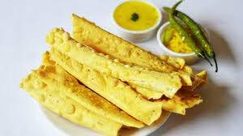

fafda
Crunchy delicacy of Gujarat

Fafda is a popular Gujarati snack that is crispy, flavorful, and perfect for tea time. It is made from besan (chickpea flour) and various spices, and it is typically served with hot and tangy chutneys.
To make fafda, you will need the following ingredients:
- 2 cups besan (chickpea flour)
- 1/2 teaspoon turmeric powder
- 1/2 teaspoon red chili powder
- 1/4 teaspoon ajwain (carom seeds)
- 1/4 teaspoon baking soda
- Salt to taste
- 1 tablespoon oil
- Water (as needed)
- Oil for frying
Instructions:
- In a mixing bowl, combine besan, turmeric powder, red chili powder, ajwain, baking soda, salt, and oil. Mix well.
- Add water gradually to form a smooth and stiff dough. Knead it well.
- Divide the dough into small portions and roll each portion into thin strips or long flat shapes using your palms.
- Heat oil in a deep frying pan over medium heat. Carefully drop the fafda strips into the hot oil and fry until they turn golden brown and crispy.
- Remove the fafda from the oil using a slotted spoon and place them on a paper towel to absorb excess oil.
- Serve hot fafda with green chutney, tamarind chutney, or any other chutney of your choice.
Fafda is best enjoyed with a cup of hot masala chai. It is a popular street food in Gujarat and is also served during festivals like Navratri. The crispy texture and delightful flavors of fafda make it a favorite snack for many people.